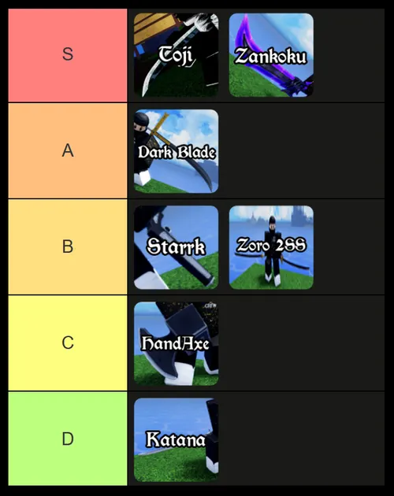

O conteudo do Anime Limitless é focado principalmente em guias, sistemas, personagens, habilidades e mecânicas relacionadas ao universo de “Anime Limitless”, um RPG inspirado em animes populares dentro do Roblox. A wiki reúne informações sobre Souls, raças, builds, chefes, códigos promocionais e progressão de personagem, além de explicar referências vindas de obras famosas como Jujutsu Kaisen, especialmente técnicas como o “Limitless” de Satoru Gojo. O site também organiza tutoriais para iniciantes, listas de tier, rotas de farm e descrições detalhadas de habilidades, servindo como uma enciclopédia comunitária para jogadores que querem entender melhor o gameplay e o lore inspirado em diferentes animes.


Os bosses de Anime Limitless representam alguns dos maiores desafios do jogo, cada um possuindo habilidades únicas, padrões de ataque diferentes e níveis variados de dificuldade. Enfrentar esses inimigos exige preparação, evolução do personagem e domínio das próprias habilidades, já que muitos deles podem causar grande dano ou utilizar ataques especiais durante a batalha. Além de servirem como obstáculos importantes na progressão, os bosses também tornam a experiência mais intensa e recompensadora, incentivando os jogadores a ficarem cada vez mais fortes para superar desafios maiores.